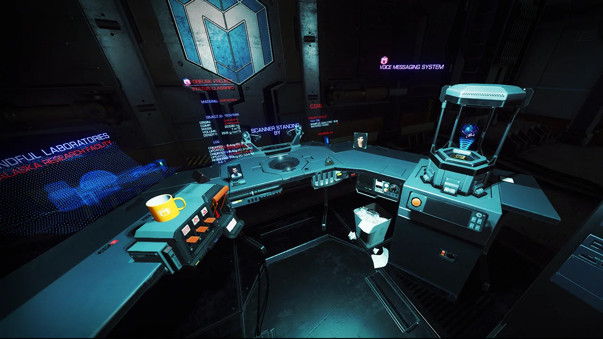
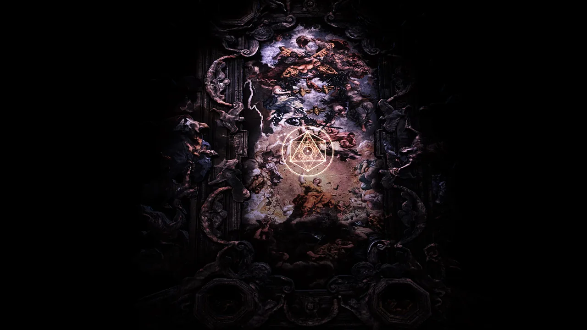
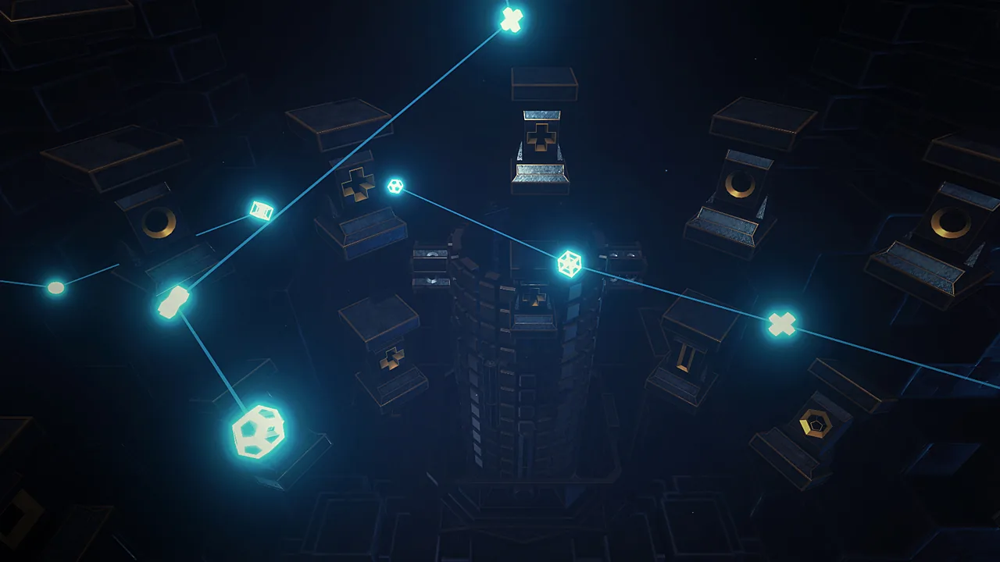
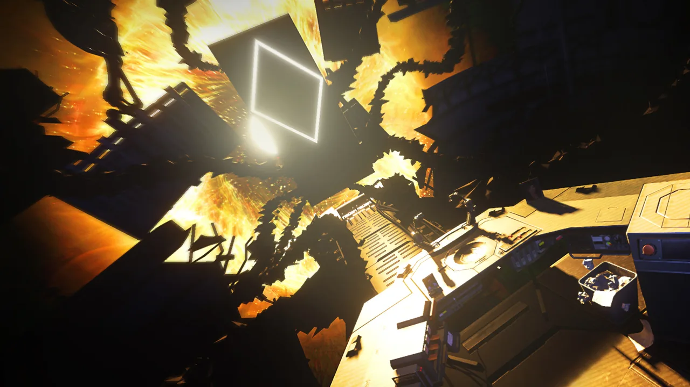

01What I owned
- Sole designer on the project
- Prototyped and implemented all system mechanics and puzzles using Playmaker visual scripting
- Designed surreal, 'alien' puzzles that still gave off UX cues players could understand
- Balanced intrinsic motivation of experiencing a surreal world with layering complication of puzzle mechanics
- Made many, many different puzzle concepts and ideas before the final set
02The game
FORM was created by the talented folks at Charm Games and was our first released foray into VR. There were only 3 of us to start which expanded into 5-6 people by the time we launched the game. As the only designer on the project, I was responsible for figuring out most things. I scripted the game almost entirely using Playmaker, a visual scripting tool for Unity.
The core of the game is interactions, simple puzzles and surreal spectacle. It was designed to take you on a journey that could only be presented in VR.

03Alien puzzles
Designing puzzles that were surreal and 'alien' but also gave off UX cues in order for players to understand was a great design challenge. Many of the design conventions that I expected to work fell flat in VR and I had to relearn a lot of my expectations.
I balanced the intrinsic motivation of experiencing a surreal world with the layering complication of puzzle mechanics, always keeping the player's emotional journey first.



04Mood and feel
What I am particularly proud of us accomplishing is the mood and feel of the game. The sound design was as equally important as the lighting design to draw players into this strange experience.


05Reception
FORM launched on Steam on June 1, 2017.
“Every puzzle is an alien relic that demands your curiosity and experimentation.”
The game went on to win Best VR Experience and Best VR Sound Design at the Cinequest Film & VR Festival 2018, after my time at Charm Games ended in July 2017. It was also a finalist for IGN's Best VR Experience and the Unity Awards' Best 3D Visuals.
06What I learned
Many of the design conventions that I expected to work fell flat in VR, and I had to relearn a lot of my expectations. FORM and Proximity both taught me a lot about how quickly you can get to the truth of whether something is actually fun when you're working fast and hands-on.